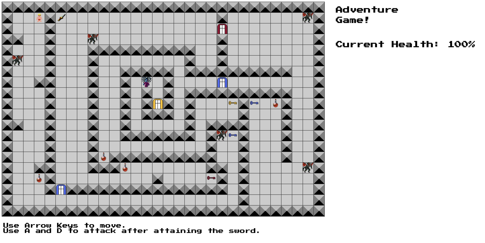
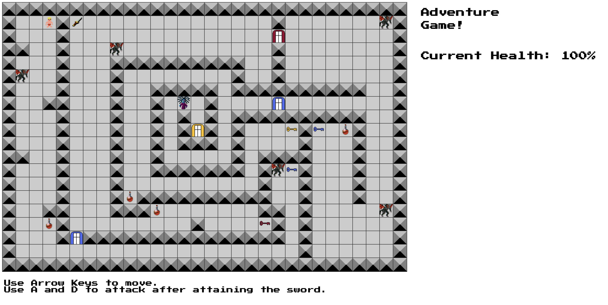

Adventure DOM Game
 


Role: Project Manager and Developer
Languagues Used: HTML, Javascript, CSS
Programs Used: Visual Studio Code, Github, Pixil Art
- Developed an interactive browser-based game using JavaScript and DOM manipulation, implementing dynamic tile-based movement, animations, and event-driven gameplay mechanics
- Designed and implemented game logic, user controls, and interactivity, including arrow key navigation and CSS animations
- Created a proposal and web-based “about” page, detailing game design, mechanics, and user experience to communicate scope
- Enhanced and customized starter code, modifying game genre, opponent behavior, and control systems
- Applied front-end development skills, including DOM traversal, event listeners, CSS transforms, and absolute positioning
- Demonstrated problem-solving and debugging skills, identifying and fixing functional, logical, and UI issues throughout development
Max's Dungeon Adventure
Genre: 2D Dungeon Action Puzzle Platform: Desktop Web Story: escape the dungeon to survive Aesthetics: grainy and flat coloring, with basic graphics Gameplay: The player will have 4 directional movement, with a weapon and interact key. The keys and there use will be on the bottom corner of the screen
Requirments Met: Validated HTML and CSS - Both passed Documentation Created and Updated ES6 Class used, No var for variable creation, and D.R.Y followed with minimum code repeation Proposal complete and submitted on time All graphics optimized for project and are very clear Game design is easy to understand and use, with win and loss screen, no code bugs, and great fun
Design Process: I wanted my game to be fun, easy to understand and use, and not hard to complete. I based my code off the DOM adventure code, and continued from there. With the base code, I updated and created my own functions, well surpassing the 50% original code expectation. I wanted to include 2 different enemy types, a health system that could lead to a game over, attacking system that allowed you to clear out monsters, and door sytem where you had to gather keys to unlock certain areas to progress. I worked on each of these parts one step at a time, updating old code where needed and creating my own for functions like attacking and passing doors.
Outside sources: Chat GPT was used for helping me fix syntax errors when needed Pixil Art was used to create new graphics for the doors and keys
View ProjectView Github Page